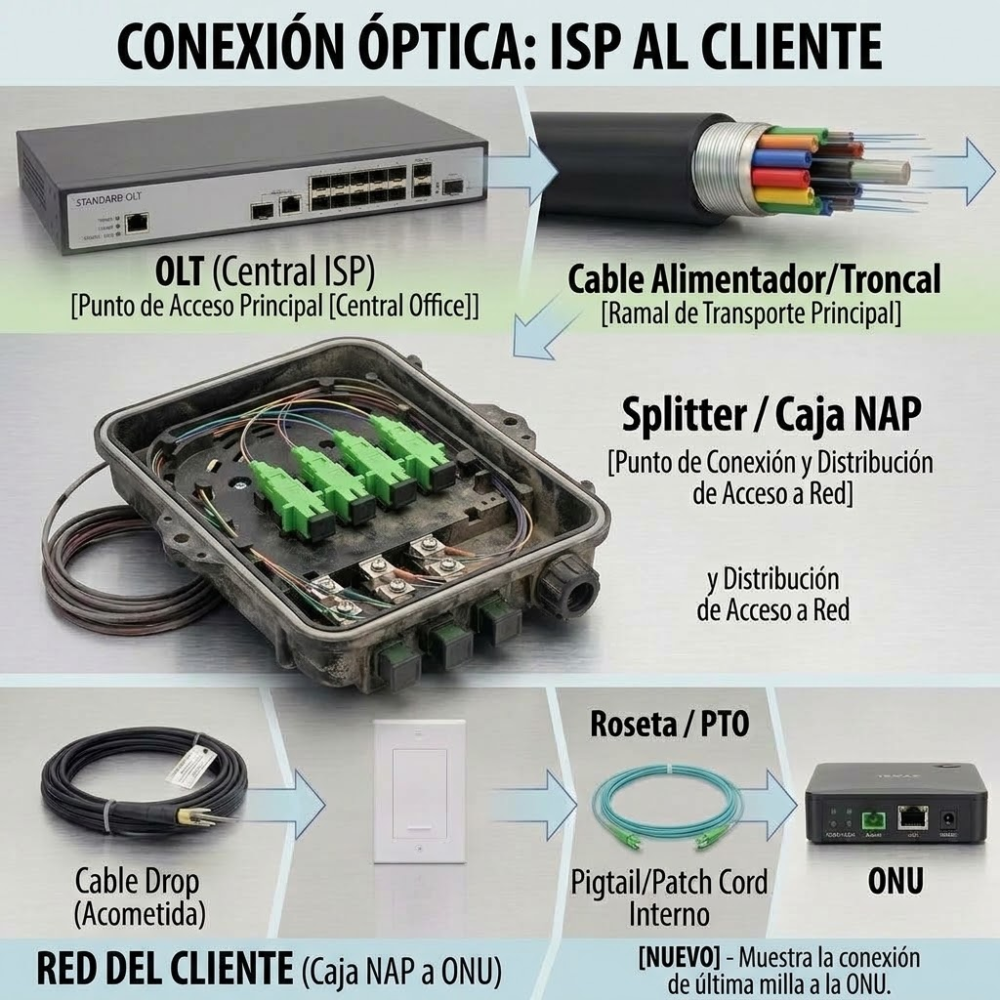
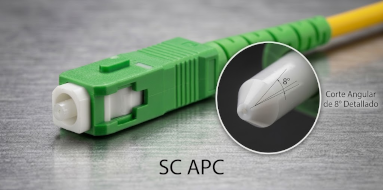
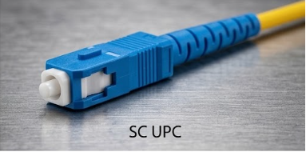
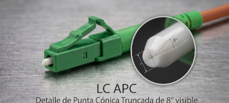
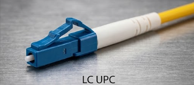

1. ¿Qué es GPON y por qué se usa en Venezuela?
GPON son las siglas de Gigabit Passive Optical Network (Red Óptica Pasiva con capacidad Gigabit). Es el estándar que utilizan prácticamente todos los ISP venezolanos (Inter, Movistar, Digitel, NetUno, etc.) para llevar Internet por fibra hasta los hogares.
Concepto clave: Red Pasiva
Se llama "pasiva" porque entre la central del ISP y tu casa no hay equipos eléctricos que amplifiquen la señal. Solo hay fibra óptica y divisores (splitters) que reparten la luz. Esto reduce costos, consumo eléctrico y puntos de falla.
En una red GPON, una sola fibra que sale de la central puede dar servicio a hasta 128 clientes mediante divisores ópticos. Esto es lo que hace que el Internet por fibra sea mucho más económico y rápido que las antiguas redes de cobre (ADSL).

Figura 1: Esquema real de una red GPON con OLT, splitter óptico y múltiples ONUs.
2. Componentes de una Red GPON
Una red GPON se compone de tres elementos principales. Es fundamental que los estudiantes identifiquen cada uno y sepan dónde se ubican físicamente.
OLT (Optical Line Terminal)
Es el equipo que está en la central del ISP. Actúa como el "cerebro" de la red: envía y recibe la señal óptica, gestiona el ancho de banda de todos los clientes y se conecta a Internet. Una OLT puede tener varios puertos PON (con conectores SC/APC), y cada puerto puede dar servicio a decenas o cientos de clientes.
Splitter Óptico (Divisor)
Es un componente pasivo (no necesita electricidad) que divide la señal de una fibra en varias. Por ejemplo, un splitter 1:32 toma la señal de una fibra y la reparte a 32 clientes. Se ubica en las NAP (cajas en postes o paredes) o en cajas de distribución.
ONU / ONT (Optical Network Unit / Terminal)
Es el módem óptico que se instala en la casa del cliente. Convierte la señal de luz en señal eléctrica (Ethernet RJ45) y Wi-Fi. Posee un puerto óptico PON (SC/APC) para recibir la fibra.
| Equipo | Ubicación | Función | ¿Necesita electricidad? |
|---|---|---|---|
| OLT | Central del ISP | Gestiona la red y da salida a Internet | Sí |
| Splitter | NAP / Caja de distribución | Divide la señal óptica | No (pasivo) |
| ONU/ONT | Casa del cliente | Convierte luz a Ethernet/Wi-Fi | Sí |

Figura 2: Componentes reales de una red GPON: OLT, splitter óptico y ONU.
3. Arquitectura FTTH Residencial (Paso a Paso)
Así se conecta un cliente residencial en Venezuela. Este es el recorrido que hace la fibra desde la central hasta la casa:

- OLT: Envía la señal óptica desde la central mediante transceptores GPON con conectores SC/APC.
- Splitter: Reparte la señal a varios clientes (ej: 1:32 o 1:64) mediante conectores SC/APC.
- NAP: Caja de acceso distribuido en el poste donde se conecta la acometida del cliente.
- Cable Drop: Fibra autosoportada de última milla (usualmente de 1 hilo G.657.A2) desde la NAP hasta la casa.
- Roseta Óptica (PTO): Punto de terminación óptica dentro de la casa. Aquí se fusiona el hilo activo con un pigtail SC/APC.
- ONU/ONT: Se conecta a la roseta mediante un patch cord monomodo y convierte la señal a Ethernet/Wi-Fi.
4. Conectores y Pulido: APC vs UPC
En las redes GPON residenciales, el estándar absoluto en toda la red de fibra es SC/APC (verde). Los conectores SC/UPC (azul) se reservan para enlaces Ethernet, switches y redes de datos de interior. Es crucial que los estudiantes entiendan la diferencia y por qué nunca se deben mezclar.
SC/APC (Verde)
Pulido en ángulo de 8°. Se usa a lo largo de toda la red GPON (ODN): transceptor de OLT, splitters, cajas NAP, rosetas y el puerto PON de la ONU. Su pulido inclinado garantiza una pérdida de retorno excelente (≤ -60 dB), evitando reflexiones que dañen los láseres GPON.
SC/UPC (Azul)
Pulido plano/esférico. Se usa en interiores de redes de datos tradicionales: enlaces Ethernet de fibra, puertos SFP de switches de agregación y equipos que no requieren pulido angulado.
| Pulido | Color | Pérdida de Retorno | Uso en ISP Venezolanos |
|---|---|---|---|
| APC | Verde | ≤ -60 dB | Red GPON completa: OLT (PON), splitters, NAP, rosetas, puerto PON de la ONU. |
| UPC | Azul | -40 dB a -55 dB | Redes de datos e interiores: switches Ethernet, routers, enlaces P2P. |
5. Tipos de Conectores Usados en Redes GPON
En las instalaciones GPON y FTTH modernas en Venezuela, el catálogo de conectores se reduce a dos familias principales: SC (estándar para acometidas y planta externa) y LC (alta densidad en OLTs y transceptores SFP). Identificar el pulido por su color es fundamental para evitar fallas.

SC/APC
VerdeConector de tamaño estándar con pulido angular (8°). Es el conector rey de las redes FTTH.
Uso: OLT (Puerto PON), splitters, cajas NAP, roseta y puerto PON de la ONU.
SC/UPC
AzulConector de tamaño estándar con pulido plano/esférico. Usado en redes de datos tradicionales.
Uso: Enlaces Ethernet de fibra, switches corporativos y equipos legacy.
LC/APC
VerdeConector compacto (1.25 mm) con pulido angular. Permite empaquetar más puertos por tarjeta.
Uso: Tarjetas OLT GPON de alta densidad y distribuidores ópticos (ODF).
LC/UPC
AzulConector compacto con pulido esférico. Estándar para transmisión de datos a alta velocidad.
Uso: Transceptores SFP/SFP+ (10 Gbps), enlaces Uplink y switches.- Forma SC (Arriba): Conector grande (cuadrado). Uso principal en planta externa, NAPs y cliente.
- Forma LC (Abajo): Conector pequeño (mini). Uso principal en OLTs, SFPs y switches.
- Verde (APC): Siempre para la red GPON (baja reflexión).
- Azul (UPC): Siempre para enlaces Ethernet / Datos de interiores.
6. Cómo viaja la señal en GPON (Downstream y Upstream)
Este es el concepto más técnico, pero es importante que los estudiantes entiendan que la señal viaja de forma diferente en cada dirección sobre un único hilo de fibra óptica.
Downstream (Bajada: OLT → ONU)
La OLT envía los datos a todas las ONUs al mismo tiempo en modo difusión (broadcast). Cada ONU filtra únicamente los datos que le corresponden mediante un identificador llamado GEM Port ID.
- Longitud de onda central: 1490 nm (rango operativo: 1480 – 1500 nm).
- Modo: Continuo (siempre hay emisión de señal).
Upstream (Subida: ONU → OLT)
Aquí está la clave de GPON: las ONUs no pueden transmitir al mismo tiempo, porque sus señales chocarían en el splitter. La OLT asigna turnos de tiempo organizados a cada ONU mediante la técnica TDMA (Time Division Multiple Access).
- Longitud de onda central: 1310 nm (rango operativo: 1290 – 1330 nm).
- Modo: Ráfagas (burst mode, la ONU solo transmite luz cuando le toca su turno).
Concepto clave: Ranging
Como cada ONU está a diferente distancia de la OLT, la OLT debe medir el tiempo de retardo de ida y vuelta (RTD) para sincronizar las ráfagas exactas. Este proceso se llama Ranging y evita colisiones en la fibra.
7. GPON vs. EPON: Lo que usan los ISP Venezolanos
En Venezuela, la tecnología dominante es GPON (ITU-T G.984). EPON casi no se usa en redes nuevas.
| Parámetro | GPON | EPON |
|---|---|---|
| Estándar | ITU-T G.984 | IEEE 802.3ah |
| Bajada | 2.488 Gbps | 1.25 Gbps |
| Subida | 1.244 Gbps | 1.25 Gbps |
| Splitter | Hasta 1:128 | Hasta 1:64 |
| Uso en Venezuela | Estándar en ISP (Inter, Movistar, Digitel, NetUno, etc.) | Muy raro, solo en redes antiguas. |
8. Transceptores y Equipos Activos
Los transceptores son módulos ópticos que se insertan en OLT, switches y ONUs para convertir señales eléctricas a ópticas y viceversa.
- SFP GPON (Class B+ / C+ / C++): Módulo para puerto PON de OLT. Trabaja a 2.5 Gbps / 1.25 Gbps con interfaz óptica SC/APC.
- SFP+: Para enlaces Uplink de 10 Gbps entre OLT y switches del núcleo/agregación. Conector LC.
- Media Converter: Convierte fibra a cobre (RJ45). Se usa en enlaces dedicados punto a punto o corporativos.
- ONU/ONT: Equipo módem/router en casa del cliente. Convierte la señal GPON (SC/APC) a puertos Ethernet RJ45 y Wi-Fi.
9. Actividad Práctica para el Aula
Ejercicio: Identificación de Componentes
Objetivo: Que los estudiantes identifiquen los componentes de una red GPON y su ubicación.
- Divide la clase en grupos de 3-4 estudiantes.
- Entrega a cada grupo una imagen de una instalación FTTH real (o el diagrama de esta guía).
- Cada grupo debe identificar:
- Dónde está la OLT, el splitter, la NAP, la roseta y la ONU.
- Por qué se utiliza el conector SC/APC (verde) en el puerto PON de la ONU y la roseta.
- Qué longitud de onda nominal viaja en cada dirección (1490 nm bajada / 1310 nm subida).
- Al final, cada grupo expone sus respuestas y se discute en clase.
Pregunta de reflexión: ¿Por qué crees que en Venezuela se usa GPON y no EPON? ¿Qué ventajas tiene GPON para los ISP?